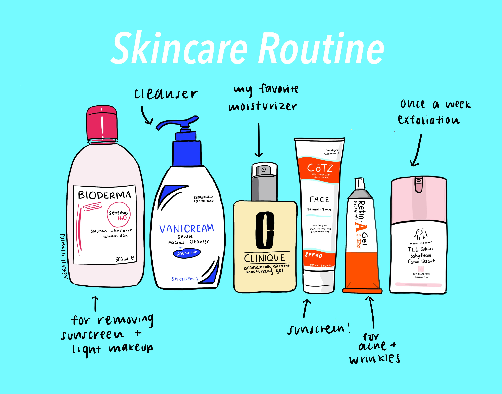

My Skincare Routine

Skincare has become an essential part of my daily routine. It not only helps me maintain healthy skin but also gives me a boost of confidence. In this blog post, I will share my daily skincare routine that has worked wonders for me.
I start my day by cleansing my face with a gentle face wash that suits my skin type. I use lukewarm water to rinse my face and then gently massage the cleanser all over my face, including the neck. I make sure to rinse my face thoroughly and pat it dry with a clean towel.
After cleansing, I use a toner to remove any remaining impurities and to restore the pH balance of my skin. I apply the toner using a cotton pad and gently dab it all over my face.
Next, I use a serum that suits my skin type to provide an extra boost of hydration. I apply a small amount of the serum all over my face and gently massage it in.
The skin around the eyes is delicate and requires special attention. Therefore, I use an eye cream that contains hydrating and anti-aging ingredients. I apply a small amount of eye cream around the eye area and gently pat it in using my ring finger.
To keep my skin moisturized and hydrated, I use a moisturizer that suits my skin type. I apply a small amount of moisturizer all over my face and neck and massage it in using upward circular motions.
Sunscreen is a must-have in any skincare routine. I use a sunscreen with at least SPF 30 to protect my skin from harmful UV rays. I apply a generous amount of sunscreen all over my face and neck and reapply it every two hours when I am outdoors.
I follow this skincare routine every morning and evening, and it has helped me maintain healthy, glowing skin. Additionally, I make sure to stay hydrated, eat a balanced diet, and exercise regularly to promote overall health and well-being. Remember, consistency is key when it comes to skincare, and it's never too late to start taking care of your skin.